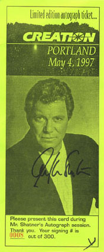
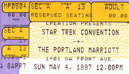

 |
 |
On May 4th 1997 I had the priveledge of meeting William Shatner at the
Portland, Ore Star Trek Convention. At this convention Mr. Shatner agreed to
sign 300 autographs only. William Shatner doesn't sign very much and I wanted to
get in on this signing. I also had a front row, middle stage seat where I was
able to take a full roll of film. It was a wonderful experience.
It was one
of the best presentations I've been to.
|